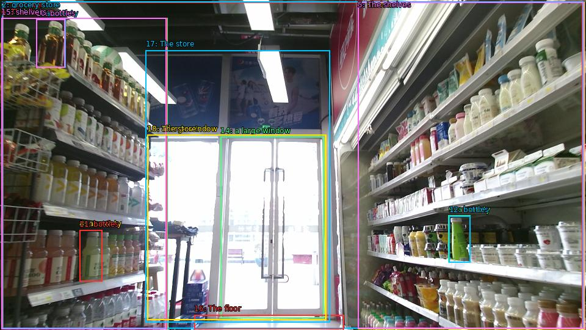

The image shows the interior of a grocery store with shelves stocked with various types of food and drinks. The shelves are arranged in a neat and orderly manner, with a variety of bottles, jars, and containers of different sizes and colors. On the left side of the image, there is a large window with a view of the outside, and on the right side, there are shelves with more bottles and containers. The floor is tiled, and there are a few items scattered around the store. The store appears to be well-lit with natural light coming in from the windows.

Original · Caption raw · Grounding raw · Koordinate
Številke so lokalni ID regije. Dolge slikovne oznake so skrajšane; spodaj so celotne fraze. Napovedane regije se lahko prekrivajo ali opisujejo skupine.
| ID | Celotna fraza | bbox xyxy |
|---|---|---|
| 1 | the interior | [4.319999694824219, 3.510000228881836, 954.719970703125, 537.030029296875] |
| 2 | grocery store | [3.359999895095825, 2.9700000286102295, 955.6799926757812, 537.5700073242188] |
| 3 | shelves | [586.0800170898438, 3.510000228881836, 957.5999755859375, 538.1100463867188] |
| 4 | shelves | [2.3999998569488525, 29.970001220703125, 274.0799865722656, 538.1100463867188] |
| 5 | The shelves | [586.0800170898438, 3.510000228881836, 956.6399536132812, 537.5700073242188] |
| 6 | The shelves | [2.3999998569488525, 29.970001220703125, 273.1199951171875, 538.1100463867188] |
| 7 | a variety | [59.03999710083008, 31.590002059936523, 107.04000091552734, 110.97000122070312] |
| 8 | a variety | [130.0800018310547, 376.1100158691406, 167.51998901367188, 460.8900146484375] |
| 9 | a variety | [734.8800048828125, 352.8900146484375, 770.3999633789062, 429.57000732421875] |
| 10 | bottles | [59.03999710083008, 31.590002059936523, 106.07999420166016, 110.97000122070312] |
| 11 | bottles | [130.0800018310547, 376.6500244140625, 167.51998901367188, 460.8900146484375] |
| 12 | bottles | [735.8399658203125, 353.4300231933594, 770.3999633789062, 429.57000732421875] |
| 13 | a large window | [241.4399871826172, 220.5900115966797, 533.2799682617188, 523.530029296875] |
| 14 | a large window | [361.44000244140625, 223.8300018310547, 530.3999633789062, 520.8300170898438] |
| 15 | shelvers | [2.3999998569488525, 29.970001220703125, 272.1600036621094, 538.1100463867188] |
| 16 | The floor | [318.239990234375, 515.4299926757812, 563.0399780273438, 538.6500244140625] |
| 17 | The store | [238.55999755859375, 82.35000610351562, 540.9599609375, 527.8500366210938] |
| 18 | The store | [241.4399871826172, 220.5900115966797, 534.239990234375, 523.530029296875] |